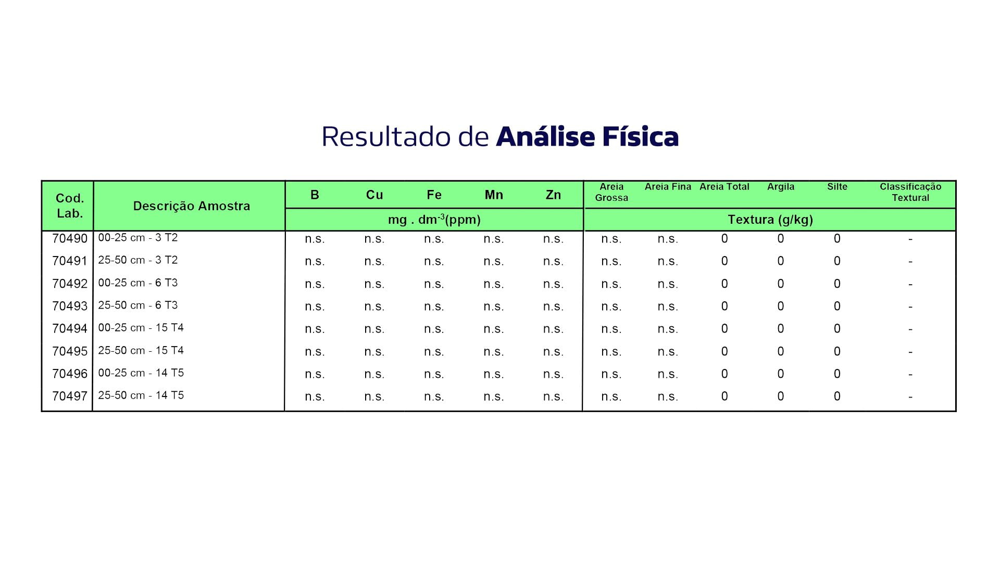
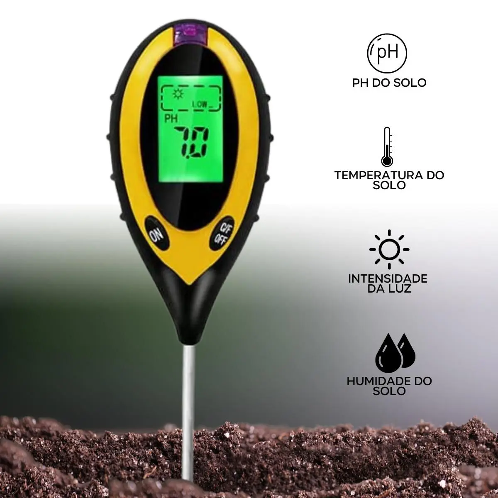
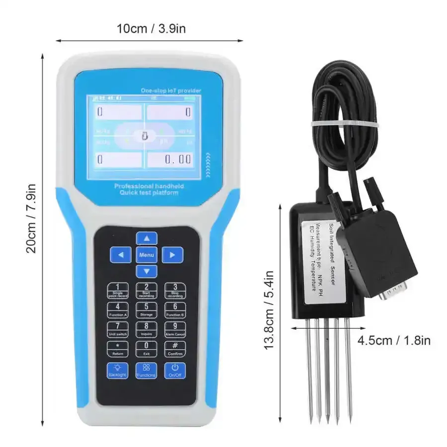
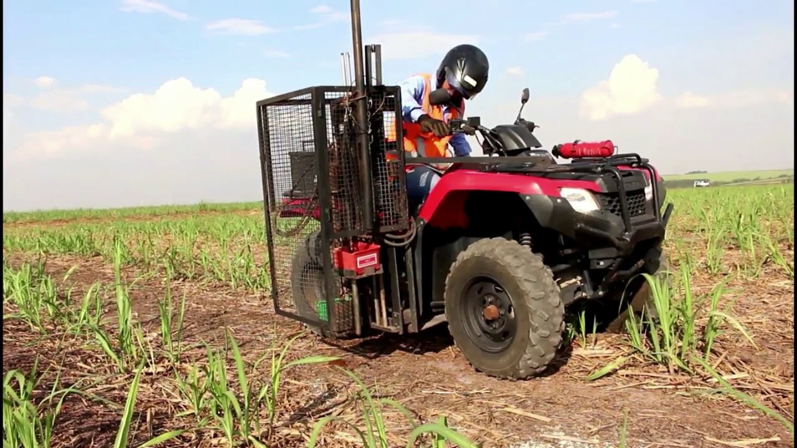
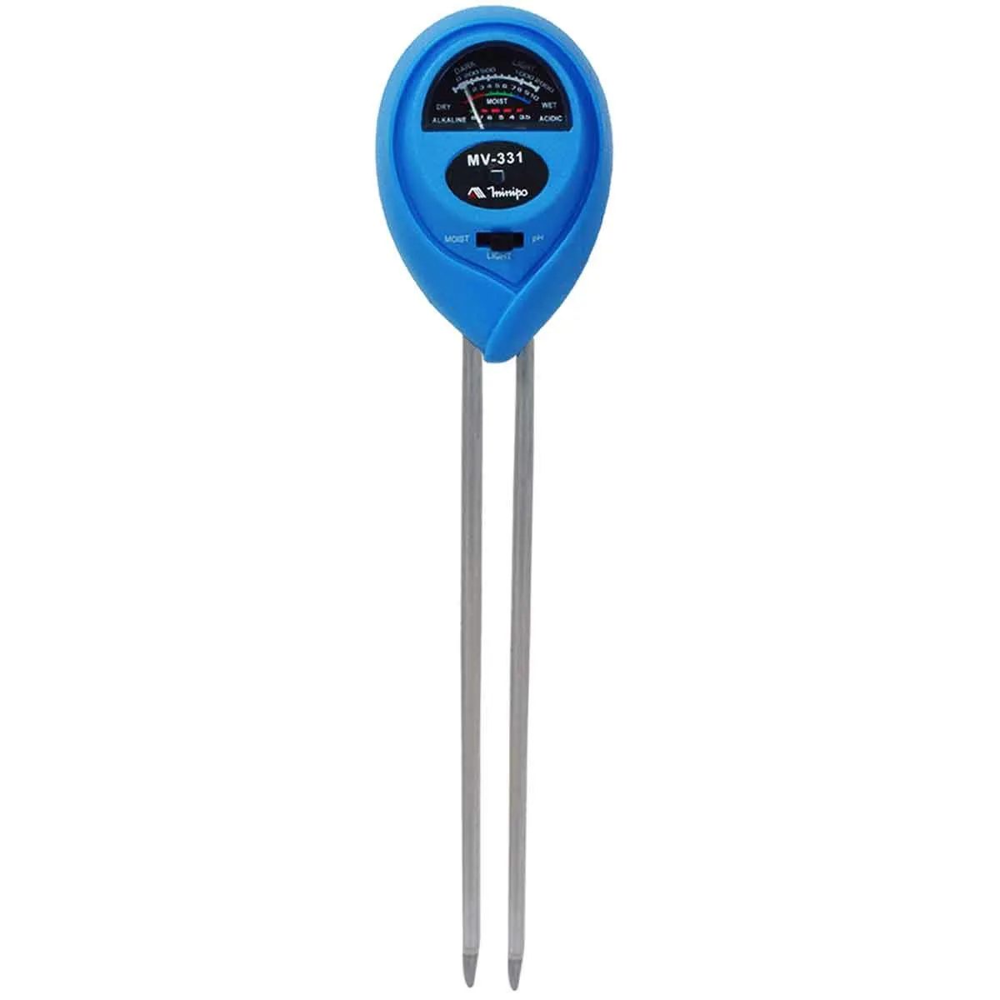

Exemplo de análise de solo fisica.
Nossas Ferramentas
Medidor de pH
Verifique o nível de acidez do solo para garantir condições ideais de cultivo.
Testador de Nutrientes
Avalie a presença de nutrientes essenciais, como N, P e K, para melhorar a fertilidade do solo.
Amostrador de Solo
Ferramenta prática para coleta eficiente de amostras de solo em diferentes profundidades.
Medidor de Umidade
Monitore o nível de umidade do solo para garantir uma irrigação adequada.